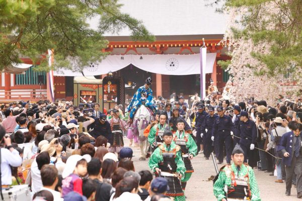

春の藤原まつりは、例年5月1日から5日までの5日間開催される。中尊寺や毛越寺で藤原四代の追善法要、稚児行列、開山護摩法要、郷土芸能、能や狂言の奉納が行われ、最終日には武蔵坊弁慶に因んで巨大な餅を抱えて運ぶ力自慢の競技会「弁慶力餅競技大会」が平泉駅前で開催される。
特に有名なのが、ゴールデンウィーク中の5月3日に開催される「源義経公東下り行列」である。
春の藤原まつりは、例年5月1日から5日までの5日間開催される。中尊寺や毛越寺で藤原四代の追善法要、稚児行列、開山護摩法要、郷土芸能、能や狂言の奉納が行われ、最終日には武蔵坊弁慶に因んで巨大な餅を抱えて運ぶ力自慢の競技会「弁慶力餅競技大会」が平泉駅前で開催される。
特に有名なのが、ゴールデンウィーク中の5月3日に開催される「源義経公東下り行列」である。
秋の藤原まつりは、10月20日から11月15日まで開催される「中尊寺菊まつり」と併せて例年11月1日から3日までの3日間開催される。1日目は、藤原四代の公追善法要（中尊寺）と公報恩法要（毛越寺）、他に稚児行列や郷土芸能などが行われる。
2日目は中尊寺と毛越寺で郷土芸能が催され、3日目は郷土芸能の他、中尊寺における能や狂言の奉納、毛越寺では浄土庭園で「延年の舞」が披露される。
源義経公東下り行列は、義経主従が兄である源頼朝の追討から逃れて平泉に辿り着いた時、藤原秀衡や地元民に歓迎された故事に倣ったもので、総勢約100名の参加者で平安絵巻を再現する。
一行は地元の名士などが務めるが、義経公役は1973年頃から若い俳優・タレントなどの男性芸能人が務めており、東下り行列の知名度が定着して以降は沿道に例年16万人から18万人程の見物客が訪れる。
〒○○○-○○○
岩手県○○市○○町〇丁目○○-○○
☏ 000-0000-0000
fax 000-0000-0000